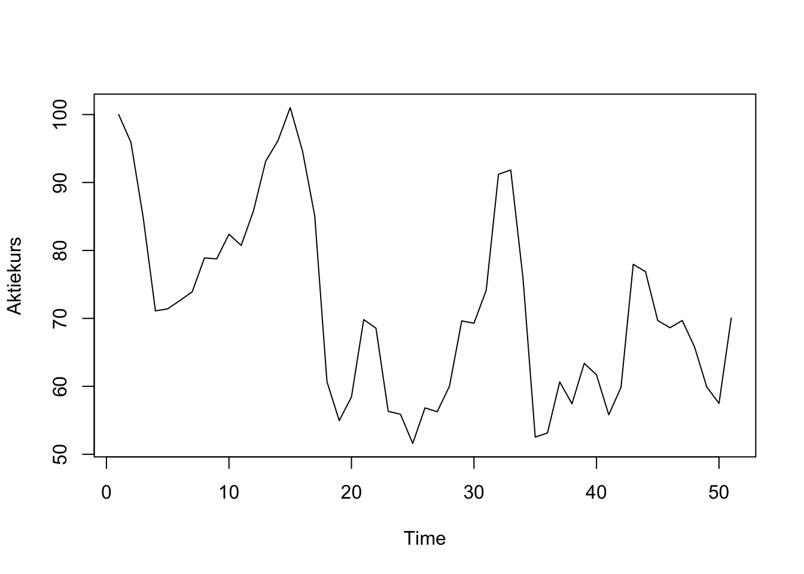
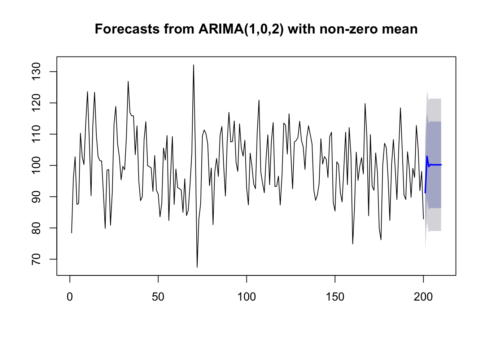

Kapitel 12 ARIMA og sæsonalitet
Hvis fx. en aktie handles lavere om fredagen kan ARIMA modellerne korrigere for dette ved sæsonkorrektion. I sæsonkorrigerede modeller vises dette som en ekstra vektor med 3 tal for hhv. sæsonkorrigeret AR eller SAR, sæsonkorrigeret I eller SI og sæsonkorrigeret MA eller SMA. En model som ARIMA(1,0,0)(1,0,0) har altså udover AR også en sæsonkomponent.
#ARIMA eksempler
12.1 Traktorer
Hent følgende data for traktor salg, med følgende kommandoer i R.
data = read.csv('http://ucanalytics.com/blogs/wp-content/uploads/2015/06/Tractor-Sales.csv')
data = ts(data[,2],start = c(2003,1),frequency = 12)Vi ser salget er voksende over tid, der er ligeledes en sæsonkomponent.

Differens tranformer data for at generere stationære data mht. middel (fjern trend)

log transformer data for at sikre stationaritet mht. varians.
Eventuel Differens og log transformation af data for at sikre stationaritet både mht. middel og varians.

Find bedste model med auto.arima, når der er stationaritet.
Akaike Information Criterion (AIC) , og Bayesian Information Criterion (BIC), vælg ARIMA modellen med mindst AIC and BIC værdier. auto.arima finder den bedste model automatisk.
## Series: log10(data)
## ARIMA(0,1,1)(0,1,1)[12]
##
## Coefficients:
## ma1 sma1
## -0.4047 -0.5529
## s.e. 0.0885 0.0734
##
## sigma^2 estimated as 0.0002571: log likelihood=354.4
## AIC=-702.79 AICc=-702.6 BIC=-694.17Nu kan vi forudsige kommende traktor salg med modellen
## Jan Feb Mar Apr May Jun Jul
## 2015 567.7645 566.4765 670.8226 758.9138 855.9482 817.2827 938.7239
## 2016 625.2464 623.8280 738.7384 835.7481 942.6065 900.0265 1033.7626
## 2017 688.5479 686.9859 813.5300 920.3613 1038.0383 991.1474 1138.4233
## Aug Sep Oct Nov Dec
## 2015 934.5120 703.5005 626.9879 571.9988 668.5363
## 2016 1029.1243 774.7246 690.4657 629.9094 736.2206
## 2017 1133.3154 853.1596 760.3701 693.6830 810.7573plot(data,type='l',xlim=c(2003,2018),ylim=c(1,1600),xlab = 'Year',ylab = 'Tractor Salg')
lines(10^(pred$pred),col='blue')
lines(10^(pred$pred+2*pred$se),col='orange')
lines(10^(pred$pred-2*pred$se),col='orange')
12.2 Detail debet card forbrug på Island (millioner ISK).


require(forecast)
ARIMAfit = auto.arima(log10(debitcards), approximation=FALSE,trace=FALSE)
ARIMAfit## Series: log10(debitcards)
## ARIMA(2,1,0)(0,1,1)[12]
##
## Coefficients:
## ar1 ar2 sma1
## -0.7167 -0.4372 -0.8352
## s.e. 0.0761 0.0763 0.1085
##
## sigma^2 estimated as 0.0004402: log likelihood=343.95
## AIC=-679.9 AICc=-679.61 BIC=-668.05Nu kan vi forudsige kommende debetkort omsætning med modellen
par(mfrow = c(1,1))
pred = predict(ARIMAfit, n.ahead = 36)
plot(debitcards,type='l',xlim=c(2000,2016),ylim=c(1,40000),xlab = 'Year',ylab = 'Debetcard usage')
lines(10^(pred$pred),col='blue')
lines(10^(pred$pred+2*pred$se),col='orange')
lines(10^(pred$pred-2*pred$se),col='orange')Forudsagt brug af debetkort bliver:
## Jan Feb Mar Apr May Jun Jul
## 2013 19717.77 19162.87 20436.29 20506.84 23262.14 23545.62 24292.86
## 2014 20701.39 20352.57 21886.85 21721.53 24745.18 25091.09 25806.49
## 2015 22017.60 21649.95 23281.85 23104.56 26321.98 26689.74 27450.29
## Aug Sep Oct Nov Dec
## 2013 25544.16 22267.47 22543.80 22081.63 29090.93
## 2014 27175.65 23697.15 23970.40 23490.36 30947.83
## 2015 28907.08 25206.87 25497.43 24986.92 32919.46